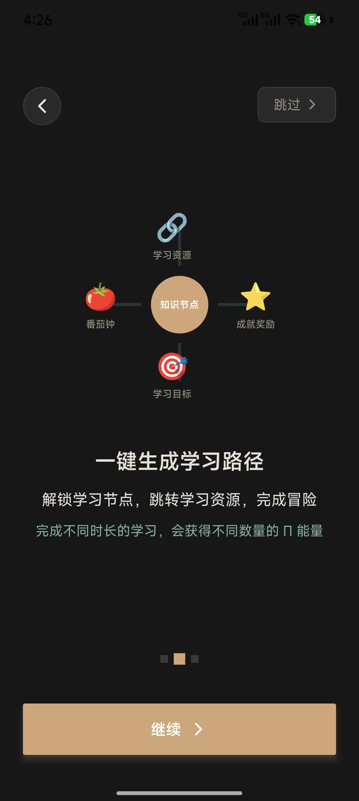
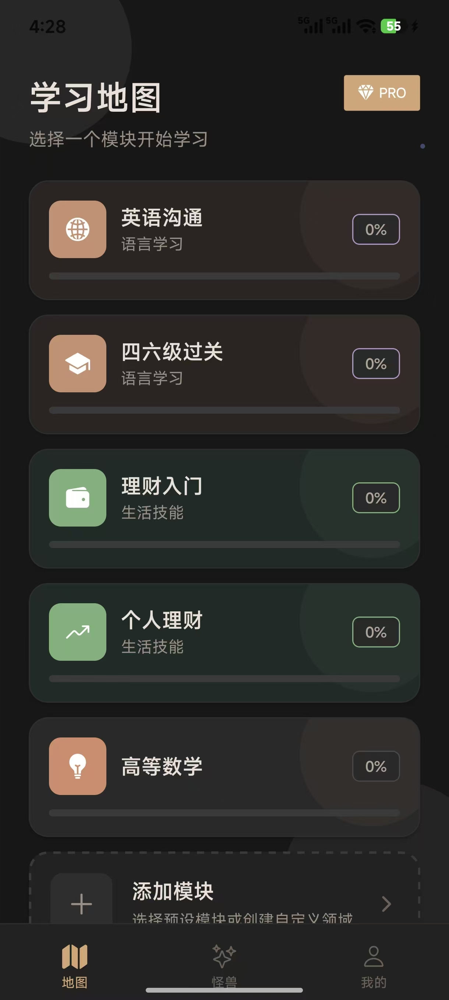
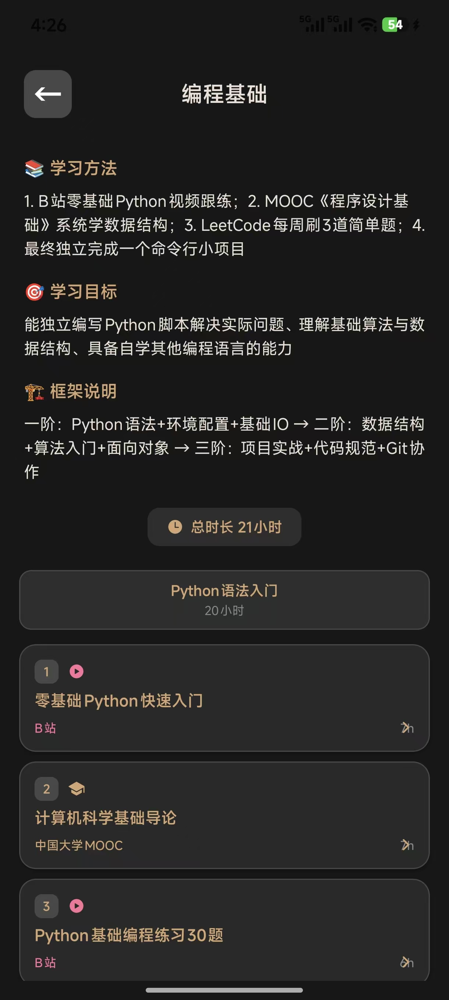
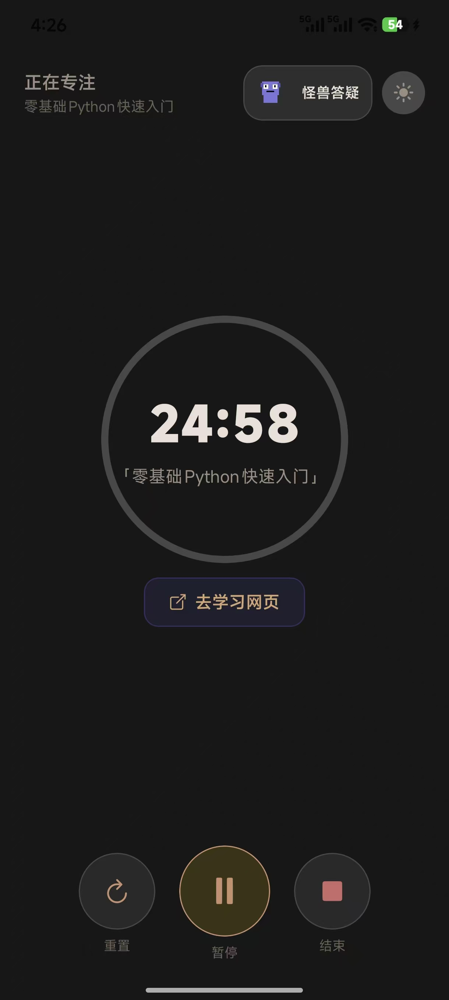
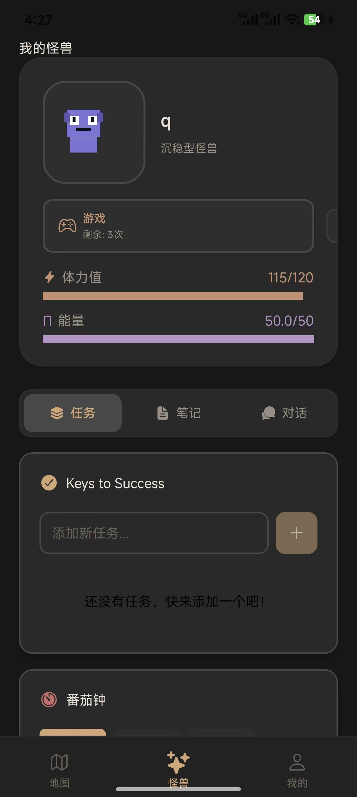

ENFJ · 责任感驱动 · AI 原生代产品人
从运营到产品 — 四段实习，逐层深入 AI 产品核心
按赛道分类 · STAR 法则拆解 · 数据指标体系驱动
React Native 全栈 · AI Coding 驱动 · 从 0 到 1 独立交付
LearnFlow 学了么是一款基于 React Native + Expo 构建的沉浸式技能学习伴侣应用。以像素风格界面 + 游戏化机制让学习更有趣。针对学习动力衰减快、路径不清晰、碎片化难专注三大痛点，核心功能围绕痛点设计：
① AI 获取整理开源学习材料——LLM 自动抓取并清洗结构化知识点，按领域归类为可学习的技能树节点。
② AI 智能生成学习规划——根据用户身份（学生/职场）、兴趣和当前水平，千人千面生成个性化学习路径，自动拆分阶段与每日节点。
③ 游戏化学习引导——数字怪兽养成 + 迷你游戏恢复体力 + 番茄钟专注，通过游戏化反馈驱动持续学习闭环。
项目由 AI Coding 驱动独立全栈开发（移动端 + 后端），涵盖用户认证、AI 技能树生成、数字宠物养成、游戏化激励、Pro 会员等完整功能链路，15 个页面、37+ API 端点、12 张数据表。
以北极星指标为牵引，按「学生 → 职场 → 留存 → 商业化」四阶段渐进迭代，每版本设核心成功指标闭环验证
从新手引导到学习闭环 — 5 个核心页面展示完整用户旅程





评测范围：AI 填充功能（自定义领域）+ AI 对话功能（怪兽页面）。评测目标：确保 AI 功能效果稳定、可控、无风险
DeepSeek 轻量级模型，付费调用。中文语境理解和结构化输出表现优异，在 AI 对话和 AI 填充两端均显著优于对比方案。
Agnes 系列模型免费，在结构化 JSON Schema 输出方面有一定优化，但综合效果不及 DeepSeek，作为备选方案。
面向券商投研分析师、机构交易员、财富管理投顾的金融高价值场景 RAG 落地项目。基于 Dify 搭建，上传 10000 份结构化研报，采用混合检索 + Jina Reranker + 结构化 Prompt 工程，全流程贴合投研实际业务。
一个处于早期探索阶段的 AI Coding 项目，目标是帮助求职者系统性规划秋招流程——包括岗位匹配、时间线管理、面试准备追踪等核心功能。项目体现了对求职场景的产品化思考，与 LearnFlow 形成"学习→求职"的能力延伸。